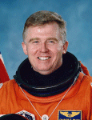

Lyndon B. Johnson Space Center
Houston, Texas 77058
|
National Aeronautics and Space Administration Lyndon B. Johnson Space Center Houston, Texas 77058 |
 |
Biographical Data |
||
Charles E. Brady, Jr. (Captain, USN)
NASA Astronaut (Deceased)
PERSONAL DATA: Born August 12, 1951, in Pinehurst, North Carolina. Brady passed away July 23, 2006 at his home in Washington State.
EDUCATION: Graduated from North Moore High School, Robbins, North Carolina, in 1969; was pre-med at University of North Carolina at Chapel Hill, 1969-1971; received a doctorate in medicine from Duke University in 1975.
ORGANIZATIONS: Association of Military Surgeons of the United States, Society of U.S. Naval Flight Surgeons, Aerospace Medical Association and Space Medicine Branch, Phi Beta Kappa, and Phi Eta Sigma.
SPECIAL HONORS: Eagle Scout; recipient of the Fox Flag for highest academic achievement at Naval Aerospace Medical Institute; Richard E. Luehrs Memorial Award for Navy Operational Flight Surgeon of the Year (1987); Flight Surgeon for the "Blue Angels" Navy Flight Demonstration Squadron (1989-1990); Physician Coordinator for Operation Raleigh-USA (a British-sponsored international youth leadership program selected by the U.S. Department of Defense); Defense Superior Service Medal; Navy Commendation Medal with Gold Star; Navy Achievement Medal; Meritorious Unit Commendation, Battle E; NASA Space Flight Medal; National Defense Medal; Armed Forces Expeditionary Service Medal; Sea Service Ribbon.
EXPERIENCE: Following graduation in 1969, Brady attended the University of North Carolina at Chapel Hill, majoring in pre-med. He was accepted into medical school at Duke University in Durham, North Carolina, in 1971 and graduated in 1975. From Duke, he went to the University of Tennessee Hospital in Knoxville for his internship. In 1978 Brady worked as the team physician in sports medicine for Iowa State University in Ames. He continued in sports medicine and family practice for the next seven years working as a team physician at the University of North Carolina at Chapel Hill and East Carolina University in Greenville, North Carolina. He joined the Navy in 1986 receiving training as a flight surgeon at the Naval Aerospace Medical Institute at Naval Air Station Pensacola, Florida. In June 1986 he reported to Carrier Air Wing Two on board the aircraft carrier USS Ranger (CV 61). He was assigned to the attack wing including Attack Squadron 145 (VA-145) and Aviation Electronic Countermeasures Squadron 131 (VAQ-131). Brady was selected for the Navy Flight Demonstration Squadron "Blue Angels" in 1988 and served with them through 1990. He was serving in Tactical Electronic Warfare Squadron 129 when selected for the astronaut program.
NASA EXPERIENCE: Brady was selected by NASA in March 1992, and reported to the Johnson Space Center in August 1992. He was qualified for selection as a mission specialist on future Space Shuttle flight crews. Technical assignments included working issues for the Astronaut Office Mission Development Branch; flight software testing in the Shuttle Avionics Integration Laboratory (SAIL); astronaut representative to the Human Research Policy and Procedures Committee; deputy chief for Space Shuttle astronaut training; and chief for Space Station astronaut training in the Mission Operations Division. He flew on STS-78 in 1996 and logged over 405 hours in space. Brady left NASA and returned to the U.S. Navy.
SPACE FLIGHT EXPERIENCE: STS-78 Columbia (June 20 to July 7, 1996) was the longest Space Shuttle mission to date. The 16-day mission included studies sponsored by ten nations and five space agencies, and was the first mission to combine both a full microgravity studies agenda and a comprehensive life science investigation. The Life and Microgravity Spacelab mission served as a model for future studies on board the International Space Station. The STS-78 flight orbited the Earth 271 times, covered 7 million miles in 405 hours.
JULY 2006
{kind=link}